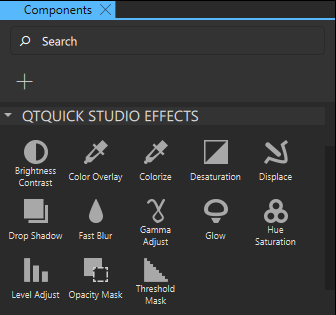
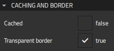
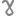
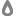
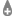

2D Effects
Qt Design Studio provides a set of effects that you can apply to components by dragging-and-dropping them from Components > Qt Quick Studio Effects to the component in Navigator.

Note: The availability of effects depends on whether you selected Qt 5 or Qt 6 when creating your project.
Effects have one or more source properties for specifying the visual input for which the effect is applied to a component. The altered visual output is then presented in the effect component itself. The source can be another, often hidden, component in the scene. More complex effects can have multiple sources. The source component can be any component, even video or another effect. Pipelining multiple effects together is a simple way to create even more impressive output.
Each effect has a set of properties that can be used to configure the effect output. They can be animated just like any other properties. The component documentation contains property descriptions and basic usage examples.
In addition to the effects described in this topic, you can set linear, radial, and conical gradients. For more information, see Picking Gradients.
Caching and Borders
Specify common properties for 2D effects in the Caching or Caching and Border section.

The Cached property allows the effect output pixels to be cached in order to improve the rendering performance. Every time the source or effect properties are changed, the pixels in the cache must be updated. Memory consumption is increased because an extra buffer of memory is required for storing the effect output. We recommend that you disable the cache when the source or the effect properties are animated.
The Transparent border property determines the blur behavior near the edges of the component, where the pixel blurring is affected by the pixels outside the source edges.
If the property is set to true, the pixels outside the source are interpreted as being transparent, which is similar to OpenGL clamp-to-border extension. The blur is expanded slightly outside the effect component area.
If the property is set to false, the pixels outside the source are interpreted as containing the same color as the pixels at the edge of the component, which is similar to OpenGL clamp-to-edge behavior. The blur does not expand outside the effect component area.
Summary of 2D Effects
The following table summarizes the available effects and contains links to the developer documentation of the inherited component. The Qt 6 column indicates which effects are available for Qt 6 projects.
Note: The effects are available when running with OpenGL.
| Icon | Effect | Qt 6 | Description |
|---|---|---|---|
| Blend | Merges two source components by using a blend mode. The default Mode is For a list of possible Mode values and examples of their use, see Blend.mode. | ||
| Brightness Contrast |  | Adjusts Brightness and Contrast. | |
| Color Overlay | | Alters the colors of the source component by applying an Overlay color. You can use the color picker to select the color. | |
| Colorize | | Sets the color in the HSL color space by specifying Hue, Lightness, and Saturation values. | |
| Desaturation | | Reduces the saturation of the colors by the value set in the Desaturation field. The value ranges from 0.0 (no change) to 1.0 (desaturated). Desaturated pixel values are calculated as averages of the original RGB component values of the source component. | |
| Directional Blur | | Applies a blur effect to the specified direction. The value of the Angle field defines the direction of the blur. This effect makes the source component appear to be moving in the direction of the blur. Blur is applied to both sides of each pixel, and therefore setting the direction to 0 and 180 provides the same result.The value of the Length field specifies the perceived amount of movement for each pixel. The movement is divided evenly to both sides of each pixel. The quality of the blur depends on the value of the Samples field. If the Length value is large, more samples are needed to preserve high visual quality. | |
| Displace | | Moves the pixels of the source component according to the displacement map specified in the Displacement source field. The value of the Displacement field specifies the scale for the displacement. The larger the scale, the larger the displacement of the pixels. The value set to | |
| Drop Shadow | | Generates a soft shadow behind the source component using a gaussian blur. This effect blurs the alpha channel of the input and colorizes the result, which it then places behind the source component to create a soft shadow. You can set the shadow's color in the Drop shadow color field and change its location in the horizontal (H) and vertical (V) Offset fields. The value of the Radius field specifies the softness of the shadow. A larger radius causes the edges of the shadow to appear more blurry. The ideal blur is achieved by setting the value of the Samples field to twice as large as the highest required radius value plus one ( The soft shadow is created by blurring the image live using a gaussian blur, which is a costly operation. Fullscreen gaussian blur with even a moderate number of samples will only run at 60 FPS on high-end graphics hardware. | |
| Fast Blur | | Applies a fast blur effect to one or more source components. Fast Blur offers lower blur quality than Gaussian Blur, but it is faster to render. This effect softens the source content by blurring it with an algorithm that uses source content downscaling and bilinear filtering. Use this effect if the source content is rapidly changing and the highest possible blur quality is not needed. The value of the Radius field specifies the distance of the neighboring pixels that affect the blurring of an individual pixel. A larger radius increases the blur effect. The fast blur algorithm may internally reduce the accuracy of the radius in order to provide good rendering performance. | |
|  | Gamma Adjust | | Alters the luminance of the source component. This effect is applied to each pixel according to the curve that is pre-defined as a power-law expression, where the value of the Gamma field is used as the reciprocal scaling exponent. |
| Gaussian Blur | Applies a gaussian blur effect to one or more source components. The effect softens the image by blurring it with an algorithm that uses the gaussian function to calculate the effect. The effect produces higher quality than Fast Blur, but is slower to render. Performing blur live is a costly operation. Fullscreen gaussian blur with even a moderate number of Samples will only run at 60 FPS on high-end graphics hardware. The value of the Radius field specifies the distance of the neighboring pixels that affect the blurring of an individual pixel. The value of the Distance field is a parameter to the gaussian function that is used when calculating neighboring pixel weights for the blurring. A larger deviation causes an image to appear more blurry, but it also reduces the quality of the blur. A very large deviation value causes the effect to look a bit similar to what, for exmple, a box blur algorithm produces. A too small deviation value makes the effect insignificant for the pixels near the radius. | ||
| Glow | | Generates a halo-like glow around the source component. This effect blurs the alpha channel of the source and colorizes it with Glow color. It then places the alpha channel behind the source, resulting in a halo or glow around the component. The quality of the blurred edge can be controlled by using the values of the Samples and Radius and the strength of the glow can be changed using the value of the Spread field. | |
| Hue Saturation | | Alters the source component colors in the HSL color space. This effect is similar to the Colorize effect, but the Hue and Saturation values are handled differently. This effect always shifts these values, as well as the Lightness value from the original, instead of setting them. | |
| Inner Shadow | Generates a colorized and blurred shadow inside the source using the color that you specify in the Inner shadow color field. The quality of the shadow can be controlled by the values of the Samples and Radius fields. Ideally, the sample value should be twice as large as the highest required radius value. For example, if the radius is animated between The value of the Spread field specifies how large a part of the shadow color is strengthened near the source edges. The effect produces a high quality shadow image, and therefore the rendering speed of the shadow might not be the highest possible. The rendering speed is reduced especially if the shadow edges are heavily softened. For use cases that require faster rendering speed at the cost of high visual quality, select the Fast check box. | ||
| Level Adjust | | Adjusts color levels in the RGBA color space. This effect adjusts the source component colors separately for each color channel. Source component contrast can be adjusted and color balance altered. The value of the Gamma field specifies the change factor for how the value of each pixel color channel is altered according to the equation. Setting the gamma values under You can specify the maximum and minimum Input and Output levels for each color channel. Maximum input sets the white-point, which means that all pixels with a higher value are rendered as white (per color channel). Decreasing this value lightens the light areas. To darken the light areas and to increase the contrast, decrease the value of the Maximum output field. The value of the Minimum input field sets the minimum input level for each color channel. It sets the black-point, which means that all pixels with a lower value are rendered as black (per color channel). Increasing this value darkens the dark areas. To lighten the dark areas and to reduce the contrast, increase the value of the Minimum output field. | |
| Masked Blur | Softens the image by blurring it. The intensity of the blur can be controlled for each pixel by specifying a Mask source, so that some parts of the source are blurred more than others. The value of the Radius field specifies the distance of the neighboring pixels that affect the blurring of an individual pixel. The value of the Samples field specifies, how many samples are taken per pixel when blur calculation is done. Larger samples produce better quality, but are slower to render. | ||
| Opacity Mask | | Masks the source component with another component specified in the Mask source field. The mask component gets rendered into an intermediate pixel buffer and the alpha values from the result are used to determine the visibility of the source component's pixels in the display. Select the Invert check box to specify that the resulting opacity is the source alpha multiplied with the inverse of the mask alpha: | |
| Radial Blur | Applies a directional blur effect in a circular direction around the component's center point. This effect makes the source component appear to be rotating into the direction of the blur. Other available motionblur effects are Zoom Blur and Directional Blur. The value of the Angle field specifies both the direction of the blur and the level of blurring. The larger the angle, the more blurred the result. The quality of the blur depends on the value or the Samples field. If the angle is large, more samples are needed to preserve high visual quality. | ||
|  | Recursive Blur | Blurs repeatedly, providing a strong blur effect. This effect softens the image by blurring it with an algorithm that uses a recursive feedback loop to blur the source as many times as set in the Loops field. The value of the Radius field specifies the distance of the neighboring pixels that affect the blurring of an individual pixel. The effect may produce more blurred results than Fast Blur or Gaussian Blur, but the result is produced asynchronously and takes more time. | |
| Threshold Mask | | Masks the source component with another component specified by Mask source. The value of the Spread field determines the smoothness of the mask edges near the Threshold alpha value. Setting spread to 0.0 uses the mask with the specified threshold. Setting higher spread values softens the transition from the transparent mask pixels towards opaque mask pixels by adding interpolated values between them. | |
|  | Zoom Blur | Applies a directional blur effect towards source component's center point. This effect makes the source component appear to be moving towards the center point in Z-direction or the camera appear to be zooming rapidly. The value of the Length field specifies the maximum perceived amount of movement for each pixel. The amount is smaller near the center specified by the horizontal (H) and vertical (V) Offset fields and reaches the specified value at the edges. The quality of the blur depends on the value of the Samples field. If the length value is large, more samples are needed to preserve high visual quality. Other available motion blur effects are Directional Blur and Radial Blur. |